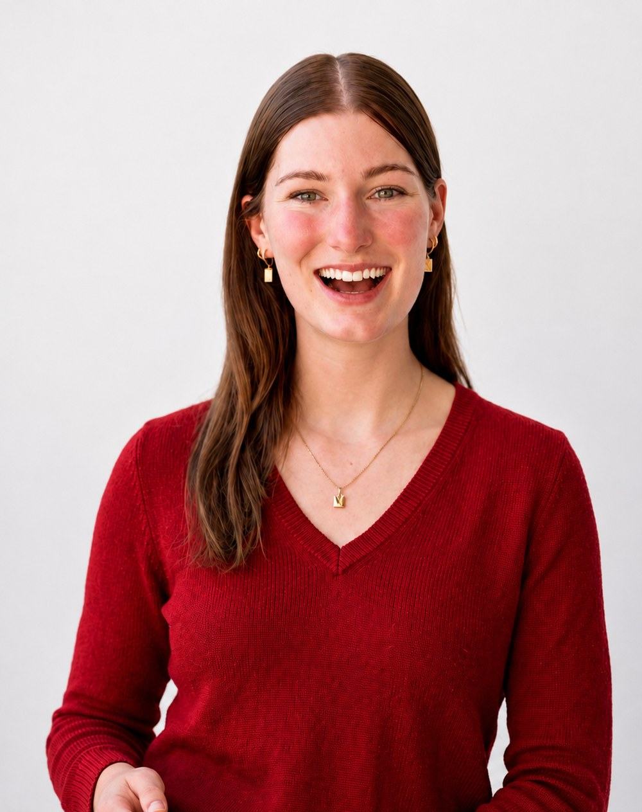
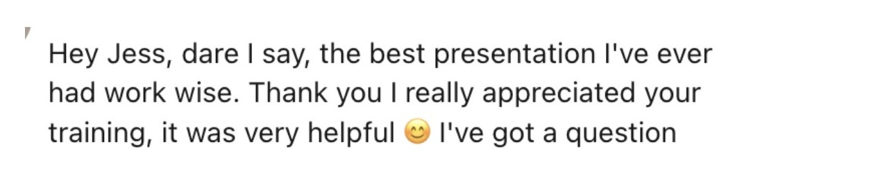
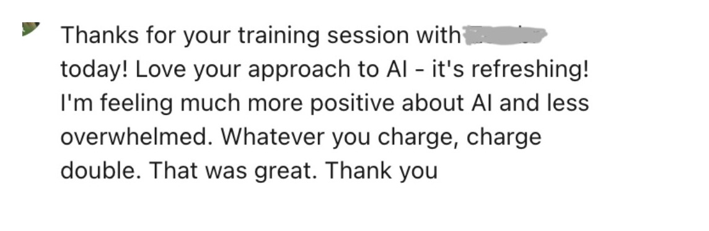
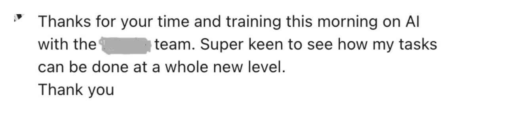
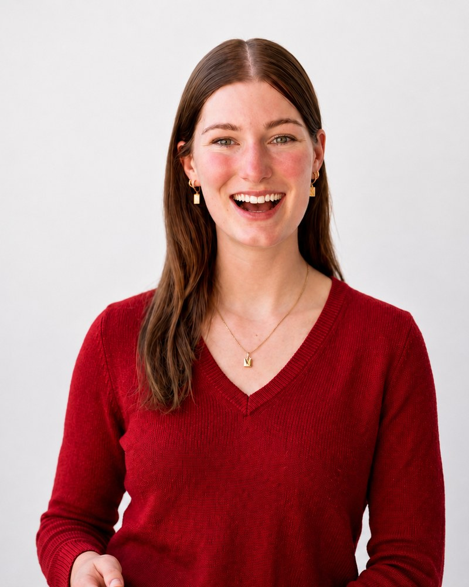

Jess Tresidder was named in InDaily's 40 Under 40 (South Australia, 2026), awarded the Inspiring Future Leaders Award by the SA Business Chamber, and was a finalist for The Advertiser and Sunday Mail SkyCity Woman of the Year in 2025. She has been featured by ABC, news.com.au, SA Life, and Business News Australia.
Home › AI workshops in Adelaide
AI workshops · AdelaideI'm a believer in learning by doing over death by PowerPoint, so every session is hands-on and everyone brings a laptop.


“Hey Jess, dare I say, the best presentation I’ve ever had work wise. Thank you, I really appreciated your training, it was very helpful.” From an AI workshop attendee

“Love your approach to AI, it’s refreshing. I’m feeling much more positive about AI and less overwhelmed. Whatever you charge, charge double. That was great.” From an organisation Jess Tresidder worked with on AI

“Thanks for your time and training this morning on AI with the team. Super keen to see how my tasks can be done at a whole new level.” From an AI presentation client
Each workshop is custom designed to suit the experience level of the participants. That means the content below shifts depending on who is in the room, and we build the session around what your team already knows.
For teams who have opened ChatGPT a few times and left it there. Some of what we'd cover:
Everyone leaves with at least one working AI agent or workflow.
For teams past the basics who want the more advanced end of it:
Sessions run one-on-one or as a group, in whichever length suits what you're trying to get through.
For executives, founders, and AI-curious individuals who would rather work through their own tasks privately than sit in a group. The whole session is built around your work.
For anyone learning the basics of AI, including setting up your .md context files so the AI knows your business. We can also run through AI workflow ideas, or optimise the AI processes you already have going.
Everything in the shorter session, with time to build out AI agents that carry out a task for you, and to connect AI to the tools you already use like Gmail, your CRM and your calendar.
Best for organisations, groups and individuals who want the advanced end of it. Agents that run a whole task end to end, tools connected so work moves between them without copying and pasting, and an AI second brain your business can draw on.
Not sure which one you need? Tell me what your team is doing manually every week and how much AI they've used, and I'll tell you honestly what length would be worth your money.
Most people try ChatGPT, get a weirdly formal email back, and move on. Here's what changes when the same task runs as a real workflow instead.
One generic reply. You still do everything else.
One trigger. The whole thing runs itself.

I run AI workshops and build AI systems for businesses across Australia, from regional teams through to fast-growing B2B startups. I started and sold my first business at 18 (featured in The Advertiser, ABC and news.com.au), so I know what it's like to learn a new tool with no time to spare.
Most people I work with aren't anti-AI. They tried ChatGPT once, got a weirdly formal email back, and quietly parked it. The workshop is where that changes, with the tool set up and working before you leave the room.
Find me on LinkedInNo, and most people who come are not. If you can send an email and use Google, you can do everything we cover. Nobody is taught to code. The sessions are built for people who tried ChatGPT once, found it underwhelming, and left it there.
You bring the task that eats your week and we build the AI tool that handles it, on your own laptop. That is usually content drafting that sounds like your business, meeting prep briefs, lead research, inbox triage, follow-up drafting, or a Monday morning brief.
I run them as one to two hour sessions, half days, or full days. One to two hours gets everyone set up and one workflow built. A full day suits teams who want the advanced end of it, including agents that run a task end to end and a proper AI second brain.
Both. I run 1:1 sessions for business owners and individuals, and group workshops for teams, from a handful of people through to corporate groups. The content is built around whoever is in the room, so a 1:1 goes deeper on your own specific work.
In person across Adelaide and South Australia, and I travel for client sessions in Victoria and New South Wales. I run the same sessions online for teams anywhere in Australia, and the online version is still hands-on, with everyone building on their own laptop.
No. Prompting is one part of a session and on its own it is the smallest part. We set up context files so the AI sounds like your business, connect it to Gmail, your CRM and your calendar, and build agents that carry out a whole task instead of answering one question.
Then we skip the basics. Advanced sessions cover optimising the workflows you already run, setting up an AI second brain so everything your business knows sits in one place the AI can draw on, and connecting your tools so work moves between them without anyone copying and pasting.
It depends on the length of the session and how many people are in the room. Email me at hello@jesstresidder.com with what your team does and roughly how many of them there are, and I'll send a figure back.
Tell me what's taking up too much of your week and I'll show you what we'd build together in the session.
I work from the belief that everyone can learn AI, and that it should be accessible to people who don't come from a technical background at all. So the sessions are practical and hands-on, and we build and learn together in the room.
I run client sessions across every state, mostly South Australia, Victoria and New South Wales, and online for teams anywhere in Australia.